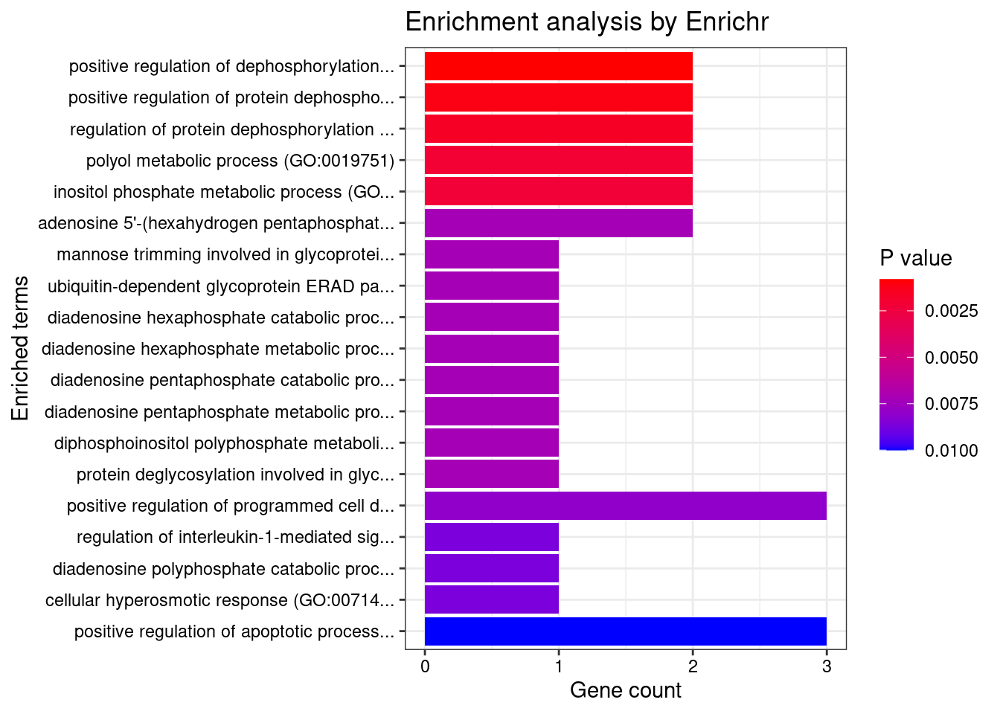

Last updated: 2022-04-19
Checks: 5 2
Knit directory: cTWAS_analysis/
This reproducible R Markdown analysis was created with workflowr (version 1.7.0). The Checks tab describes the reproducibility checks that were applied when the results were created. The Past versions tab lists the development history.
The R Markdown file has unstaged changes. To know which version of the R Markdown file created these results, you’ll want to first commit it to the Git repo. If you’re still working on the analysis, you can ignore this warning. When you’re finished, you can run wflow_publish to commit the R Markdown file and build the HTML.
Great job! The global environment was empty. Objects defined in the global environment can affect the analysis in your R Markdown file in unknown ways. For reproduciblity it’s best to always run the code in an empty environment.
The command set.seed(20211220) was run prior to running the code in the R Markdown file. Setting a seed ensures that any results that rely on randomness, e.g. subsampling or permutations, are reproducible.
Great job! Recording the operating system, R version, and package versions is critical for reproducibility.
Nice! There were no cached chunks for this analysis, so you can be confident that you successfully produced the results during this run.
Using absolute paths to the files within your workflowr project makes it difficult for you and others to run your code on a different machine. Change the absolute path(s) below to the suggested relative path(s) to make your code more reproducible.
| absolute | relative |
|---|---|
| /project2/xinhe/shengqian/cTWAS/cTWAS_analysis/data/ | data |
| /project2/xinhe/shengqian/cTWAS/cTWAS_analysis/code/ctwas_config.R | code/ctwas_config.R |
Great! You are using Git for version control. Tracking code development and connecting the code version to the results is critical for reproducibility.
The results in this page were generated with repository version ba919ab. See the Past versions tab to see a history of the changes made to the R Markdown and HTML files.
Note that you need to be careful to ensure that all relevant files for the analysis have been committed to Git prior to generating the results (you can use wflow_publish or wflow_git_commit). workflowr only checks the R Markdown file, but you know if there are other scripts or data files that it depends on. Below is the status of the Git repository when the results were generated:
Ignored files:
Ignored: .ipynb_checkpoints/
Ignored: data/AF/
Untracked files:
Untracked: Rplot.png
Untracked: analysis/.ipynb_checkpoints/
Untracked: code/.ipynb_checkpoints/
Untracked: code/AF_out/
Untracked: code/Autism_out/
Untracked: code/BMI_S_out/
Untracked: code/BMI_out/
Untracked: code/Glucose_out/
Untracked: code/LDL_S_out/
Untracked: code/SCZ_2014_EUR_out/
Untracked: code/SCZ_2018_out/
Untracked: code/SCZ_2020_Single_out/
Untracked: code/SCZ_2020_out/
Untracked: code/SCZ_S_out/
Untracked: code/SCZ_out/
Untracked: code/T2D_out/
Untracked: code/ctwas_config.R
Untracked: code/mapping.R
Untracked: code/out/
Untracked: code/process_scz_2018_snps.R
Untracked: code/run_AF_analysis.sbatch
Untracked: code/run_AF_analysis.sh
Untracked: code/run_AF_ctwas_rss_LDR.R
Untracked: code/run_Autism_analysis.sbatch
Untracked: code/run_Autism_analysis.sh
Untracked: code/run_Autism_ctwas_rss_LDR.R
Untracked: code/run_BMI_analysis.sbatch
Untracked: code/run_BMI_analysis.sh
Untracked: code/run_BMI_analysis_S.sbatch
Untracked: code/run_BMI_analysis_S.sh
Untracked: code/run_BMI_ctwas_rss_LDR.R
Untracked: code/run_BMI_ctwas_rss_LDR_S.R
Untracked: code/run_Glucose_analysis.sbatch
Untracked: code/run_Glucose_analysis.sh
Untracked: code/run_Glucose_ctwas_rss_LDR.R
Untracked: code/run_LDL_analysis_S.sbatch
Untracked: code/run_LDL_analysis_S.sh
Untracked: code/run_LDL_ctwas_rss_LDR_S.R
Untracked: code/run_SCZ_2014_EUR_analysis.sbatch
Untracked: code/run_SCZ_2014_EUR_analysis.sh
Untracked: code/run_SCZ_2014_EUR_ctwas_rss_LDR.R
Untracked: code/run_SCZ_2018_analysis.sbatch
Untracked: code/run_SCZ_2018_analysis.sh
Untracked: code/run_SCZ_2018_ctwas_rss_LDR.R
Untracked: code/run_SCZ_2020_Single_analysis.sbatch
Untracked: code/run_SCZ_2020_Single_analysis.sh
Untracked: code/run_SCZ_2020_Single_ctwas_rss_LDR.R
Untracked: code/run_SCZ_2020_analysis.sbatch
Untracked: code/run_SCZ_2020_analysis.sh
Untracked: code/run_SCZ_2020_ctwas_rss_LDR.R
Untracked: code/run_SCZ_analysis.sbatch
Untracked: code/run_SCZ_analysis.sh
Untracked: code/run_SCZ_analysis_S.sbatch
Untracked: code/run_SCZ_analysis_S.sh
Untracked: code/run_SCZ_ctwas_rss_LDR.R
Untracked: code/run_SCZ_ctwas_rss_LDR_S.R
Untracked: code/run_T2D_analysis.sbatch
Untracked: code/run_T2D_analysis.sh
Untracked: code/run_T2D_ctwas_rss_LDR.R
Untracked: code/wflow_build.R
Untracked: code/wflow_build.sbatch
Untracked: data/.ipynb_checkpoints/
Untracked: data/BMI/
Untracked: data/GO_Terms/
Untracked: data/PGC3_SCZ_wave3_public.v2.tsv
Untracked: data/SCZ/
Untracked: data/SCZ_2014_EUR/
Untracked: data/SCZ_2018/
Untracked: data/SCZ_2020/
Untracked: data/SCZ_2020_Single/
Untracked: data/SCZ_S/
Untracked: data/Supplementary Table 15 - MAGMA.xlsx
Untracked: data/Supplementary Table 20 - Prioritised Genes.xlsx
Untracked: data/T2D/
Untracked: data/UKBB/
Untracked: data/UKBB_SNPs_Info.text
Untracked: data/gene_OMIM.txt
Untracked: data/gene_pip_0.8.txt
Untracked: data/mashr_Heart_Atrial_Appendage.db
Untracked: data/mashr_sqtl/
Untracked: data/scz_2018.RDS
Untracked: data/summary_known_genes_annotations.xlsx
Untracked: data/untitled.txt
Untracked: top_genes_32.txt
Untracked: top_genes_37.txt
Untracked: top_genes_43.txt
Untracked: top_genes_81.txt
Unstaged changes:
Modified: analysis/SCZ_2018_Brain_Amygdala.Rmd
Modified: analysis/SCZ_2018_Brain_Anterior_cingulate_cortex_BA24.Rmd
Modified: analysis/SCZ_2018_Brain_Caudate_basal_ganglia.Rmd
Modified: analysis/SCZ_2018_Brain_Cerebellar_Hemisphere.Rmd
Modified: analysis/SCZ_2018_Brain_Cerebellum.Rmd
Modified: analysis/SCZ_2018_Brain_Cortex.Rmd
Modified: analysis/SCZ_2018_Brain_Frontal_Cortex_BA9.Rmd
Modified: analysis/SCZ_2018_Brain_Hippocampus.Rmd
Modified: analysis/SCZ_2018_Brain_Hypothalamus.Rmd
Modified: analysis/SCZ_2018_Brain_Nucleus_accumbens_basal_ganglia.Rmd
Modified: analysis/SCZ_2018_Brain_Putamen_basal_ganglia.Rmd
Modified: analysis/SCZ_2018_Brain_Spinal_cord_cervical_c-1.Rmd
Modified: analysis/SCZ_2018_Brain_Substantia_nigra.Rmd
Modified: analysis/SCZ_Annotation_Analysis.Rmd
Note that any generated files, e.g. HTML, png, CSS, etc., are not included in this status report because it is ok for generated content to have uncommitted changes.
These are the previous versions of the repository in which changes were made to the R Markdown (analysis/SCZ_2018_Brain_Frontal_Cortex_BA9.Rmd) and HTML (docs/SCZ_2018_Brain_Frontal_Cortex_BA9.html) files. If you’ve configured a remote Git repository (see ?wflow_git_remote), click on the hyperlinks in the table below to view the files as they were in that past version.
| File | Version | Author | Date | Message |
|---|---|---|---|---|
| Rmd | 9ddc9c4 | sq-96 | 2022-04-18 | update |
| Rmd | f6e7062 | sq-96 | 2022-04-17 | update |
| html | f6e7062 | sq-96 | 2022-04-17 | update |
#number of imputed weights
nrow(qclist_all)[1] 9968#number of imputed weights by chromosome
table(qclist_all$chr)
1 2 3 4 5 6 7 8 9 10 11 12 13 14 15 16 17 18 19 20
988 727 567 399 488 584 459 370 362 400 616 581 206 335 326 411 640 164 776 295
21 22
26 248 #number of imputed weights without missing variants
sum(qclist_all$nmiss==0)[1] 6860#proportion of imputed weights without missing variants
mean(qclist_all$nmiss==0)[1] 0.6882#estimated group prior
estimated_group_prior <- group_prior_rec[,ncol(group_prior_rec)]
names(estimated_group_prior) <- c("gene", "snp")
estimated_group_prior["snp"] <- estimated_group_prior["snp"]*thin #adjust parameter to account for thin argument
print(estimated_group_prior) gene snp
0.0104967 0.0003109 #estimated group prior variance
estimated_group_prior_var <- group_prior_var_rec[,ncol(group_prior_var_rec)]
names(estimated_group_prior_var) <- c("gene", "snp")
print(estimated_group_prior_var) gene snp
9.587 10.407 #report sample size
print(sample_size)[1] 105318#report group size
group_size <- c(nrow(ctwas_gene_res), n_snps)
print(group_size)[1] 9968 6309950#estimated group PVE
estimated_group_pve <- estimated_group_prior_var*estimated_group_prior*group_size/sample_size #check PVE calculation
names(estimated_group_pve) <- c("gene", "snp")
print(estimated_group_pve) gene snp
0.009524 0.193868 #compare sum(PIP*mu2/sample_size) with above PVE calculation
c(sum(ctwas_gene_res$PVE),sum(ctwas_snp_res$PVE))[1] 0.05471 1.10715 genename region_tag susie_pip mu2 PVE z num_eqtl
11134 ZNF823 19_10 0.9705 35.92 0.0003310 6.156 2
13483 RP11-230C9.4 6_102 0.9654 22.67 0.0002078 -4.717 2
12304 AC012074.2 2_15 0.9319 22.04 0.0001950 4.655 1
7629 THOC7 3_43 0.9310 40.69 0.0003597 -6.638 2
11400 FOXO6 1_25 0.8661 25.49 0.0002097 -4.548 1
3758 BHLHE41 12_18 0.8579 22.87 0.0001863 4.516 1
9133 MAP3K11 11_36 0.8486 31.26 0.0002518 -5.401 1
2748 NT5DC3 12_62 0.8353 23.21 0.0001841 -4.585 2
4755 SOX5 12_17 0.7652 22.32 0.0001621 4.477 1
6859 VPS37A 8_18 0.7615 24.06 0.0001739 -4.738 1
9027 AFF1 4_59 0.7451 21.63 0.0001530 -4.096 1
3216 ARHGEF2 1_76 0.7071 22.39 0.0001503 -3.816 1
324 VRK2 2_38 0.6683 36.06 0.0002288 4.977 1
3443 PTPA 9_66 0.6571 22.84 0.0001425 -4.670 2
3036 LMAN2L 2_57 0.6373 25.18 0.0001524 -4.360 2
13738 RP11-408A13.3 9_12 0.6261 22.94 0.0001364 4.225 4
2339 TLE4 9_38 0.6207 21.02 0.0001239 4.279 1
2963 PCCB 3_84 0.6161 40.50 0.0002369 -6.724 1
4053 SCAF1 19_34 0.6148 37.64 0.0002197 -6.374 1
9166 NUDT4 12_55 0.5940 25.79 0.0001455 3.796 2 genename region_tag susie_pip mu2 PVE z num_eqtl
10825 HLA-DRB1 6_26 0.000e+00 1178.11 0.000e+00 0.9851 2
11430 HLA-DOA 6_26 0.000e+00 740.27 0.000e+00 7.6357 1
10942 HLA-DQA1 6_26 0.000e+00 709.98 0.000e+00 2.8586 4
11458 C6orf48 6_26 1.387e-01 632.85 8.333e-04 11.5418 1
11728 CLIC1 6_26 8.801e-02 629.20 5.258e-04 11.5065 2
12571 C4A 6_26 2.033e-03 627.55 1.212e-05 11.1096 3
11472 APOM 6_26 1.873e-01 625.74 1.113e-03 11.5895 1
11464 MSH5 6_26 1.357e-08 545.14 7.024e-11 10.1409 2
11443 RNF5 6_26 4.240e-12 465.75 1.875e-14 10.0454 1
11444 AGPAT1 6_26 0.000e+00 389.99 0.000e+00 -5.1903 1
11440 NOTCH4 6_26 0.000e+00 309.20 0.000e+00 7.7180 2
11729 DDAH2 6_26 0.000e+00 251.21 0.000e+00 8.1494 1
12101 SAPCD1 6_26 0.000e+00 158.42 0.000e+00 7.1109 1
11723 ATF6B 6_26 0.000e+00 154.84 0.000e+00 3.7369 1
11446 FKBPL 6_26 0.000e+00 149.71 0.000e+00 -5.2136 1
11469 CSNK2B 6_26 0.000e+00 110.95 0.000e+00 0.9231 2
11452 SKIV2L 6_26 0.000e+00 108.69 0.000e+00 1.5067 3
5147 VARS2 6_25 2.886e-01 103.75 2.843e-04 11.4130 1
11474 BAG6 6_26 0.000e+00 101.40 0.000e+00 5.0995 2
11462 VWA7 6_26 0.000e+00 97.37 0.000e+00 -2.5080 2 genename region_tag susie_pip mu2 PVE z num_eqtl
11472 APOM 6_26 0.18730 625.74 0.0011128 11.590 1
11458 C6orf48 6_26 0.13868 632.85 0.0008333 11.542 1
11728 CLIC1 6_26 0.08801 629.20 0.0005258 11.506 2
7629 THOC7 3_43 0.93101 40.69 0.0003597 -6.638 2
11134 ZNF823 19_10 0.97046 35.92 0.0003310 6.156 2
5147 VARS2 6_25 0.28864 103.75 0.0002843 11.413 1
9133 MAP3K11 11_36 0.84856 31.26 0.0002518 -5.401 1
2963 PCCB 3_84 0.61610 40.50 0.0002369 -6.724 1
324 VRK2 2_38 0.66830 36.06 0.0002288 4.977 1
4053 SCAF1 19_34 0.61481 37.64 0.0002197 -6.374 1
9343 ATG13 11_28 0.51818 43.39 0.0002135 -6.977 1
11400 FOXO6 1_25 0.86614 25.49 0.0002097 -4.548 1
13483 RP11-230C9.4 6_102 0.96536 22.67 0.0002078 -4.717 2
12304 AC012074.2 2_15 0.93187 22.04 0.0001950 4.655 1
3758 BHLHE41 12_18 0.85788 22.87 0.0001863 4.516 1
2748 NT5DC3 12_62 0.83533 23.21 0.0001841 -4.585 2
6407 TAOK2 16_24 0.41685 45.47 0.0001800 6.997 1
11089 NMB 15_39 0.52494 34.99 0.0001744 5.881 1
6859 VPS37A 8_18 0.76150 24.06 0.0001739 -4.738 1
733 PPP2R5B 11_36 0.56616 30.24 0.0001626 -5.093 1 genename region_tag susie_pip mu2 PVE z num_eqtl
11472 APOM 6_26 1.873e-01 625.74 1.113e-03 11.590 1
11458 C6orf48 6_26 1.387e-01 632.85 8.333e-04 11.542 1
11728 CLIC1 6_26 8.801e-02 629.20 5.258e-04 11.506 2
5147 VARS2 6_25 2.886e-01 103.75 2.843e-04 11.413 1
12571 C4A 6_26 2.033e-03 627.55 1.212e-05 11.110 3
5138 FLOT1 6_24 3.665e-02 78.74 2.740e-05 -10.944 1
10493 BTN3A2 6_20 1.910e-02 88.94 1.613e-05 10.632 1
11464 MSH5 6_26 1.357e-08 545.14 7.024e-11 10.141 2
11443 RNF5 6_26 4.240e-12 465.75 1.875e-14 10.045 1
2871 PRSS16 6_21 8.024e-02 72.45 5.520e-05 -9.217 1
6317 CNNM2 10_66 1.841e-01 49.66 8.681e-05 -9.113 2
12511 HLA-DMB 6_27 5.549e-02 68.55 3.612e-05 -8.962 1
11432 HLA-DMA 6_27 4.432e-02 64.71 2.723e-05 -8.771 2
11729 DDAH2 6_26 0.000e+00 251.21 0.000e+00 8.149 1
11790 AS3MT 10_66 2.365e-01 43.64 9.800e-05 8.051 1
10634 ZSCAN23 6_22 5.722e-02 47.45 2.578e-05 -7.854 1
10802 ZKSCAN3 6_22 1.617e-02 37.25 5.719e-06 7.765 1
11440 NOTCH4 6_26 0.000e+00 309.20 0.000e+00 7.718 2
11430 HLA-DOA 6_26 0.000e+00 740.27 0.000e+00 7.636 1
939 NT5C2 10_66 2.016e-01 37.08 7.096e-05 7.614 1[1] 0.01234#number of genes for gene set enrichment
length(genes)[1] 29Uploading data to Enrichr... Done.
Querying GO_Biological_Process_2021... Done.
Querying GO_Cellular_Component_2021... Done.
Querying GO_Molecular_Function_2021... Done.
Parsing results... Done.
[1] "GO_Biological_Process_2021"
[1] Term Overlap Adjusted.P.value Genes
<0 rows> (or 0-length row.names)
[1] "GO_Cellular_Component_2021" Term Overlap Adjusted.P.value
1 protein phosphatase type 2A complex (GO:0000159) 2/17 0.01008
Genes
1 PTPA;PPP2R5B
[1] "GO_Molecular_Function_2021" Term Overlap Adjusted.P.value
1 protein phosphatase activator activity (GO:0072542) 2/13 0.009564
Genes
1 PTPA;PPP2R5B Description
46 SPASTIC PARAPLEGIA 53, AUTOSOMAL RECESSIVE
49 MENTAL RETARDATION, AUTOSOMAL RECESSIVE 52
50 LAMB-SHAFFER SYNDROME
51 NEURODEVELOPMENTAL DISORDER WITH MIDBRAIN AND HINDBRAIN MALFORMATIONS
52 Developmental and speech delay due to SOX5 deficiency
53 12p12.1 microdeletion syndrome
44 Propionicaciduria
25 Propionic acidemia
28 Long Sleeper Syndrome
29 Short Sleeper Syndrome
FDR Ratio BgRatio
46 0.009105 1/10 1/9703
49 0.009105 1/10 1/9703
50 0.009105 1/10 1/9703
51 0.009105 1/10 1/9703
52 0.009105 1/10 1/9703
53 0.009105 1/10 1/9703
44 0.015601 1/10 2/9703
25 0.020466 1/10 3/9703
28 0.027238 1/10 7/9703
29 0.027238 1/10 7/9703Loading the functional categories...
Loading the ID list...
Loading the reference list...
Performing the enrichment analysis...Warning in oraEnrichment(interestGeneList, referenceGeneList, geneSet, minNum =
minNum, : No significant gene set is identified based on FDR 0.05!NULLWarning: ggrepel: 2 unlabeled data points (too many overlaps). Consider
increasing max.overlaps#number of genes in known annotations
print(length(known_annotations))[1] 130#number of genes in known annotations with imputed expression
print(sum(known_annotations %in% ctwas_gene_res$genename))[1] 52#significance threshold for TWAS
print(sig_thresh)[1] 4.564#number of ctwas genes
length(ctwas_genes)[1] 8#number of TWAS genes
length(twas_genes)[1] 123#show novel genes (ctwas genes with not in TWAS genes)
ctwas_gene_res[ctwas_gene_res$genename %in% novel_genes,report_cols] genename region_tag susie_pip mu2 PVE z num_eqtl
11400 FOXO6 1_25 0.8661 25.49 0.0002097 -4.548 1
3758 BHLHE41 12_18 0.8579 22.87 0.0001863 4.516 1#sensitivity / recall
print(sensitivity) ctwas TWAS
0.01538 0.08462 #specificity
print(specificity) ctwas TWAS
0.9994 0.9887 #precision / PPV
print(precision) ctwas TWAS
0.25000 0.08943 #number of genes in known annotations (with imputed expression)
print(length(known_annotations))[1] 52#number of bystander genes (with imputed expression)
print(length(unrelated_genes))[1] 558#subset results to genes in known annotations or bystanders
ctwas_gene_res_subset <- ctwas_gene_res[ctwas_gene_res$genename %in% c(known_annotations, unrelated_genes),]
#assign ctwas and TWAS genes
ctwas_genes <- ctwas_gene_res_subset$genename[ctwas_gene_res_subset$susie_pip>0.8]
twas_genes <- ctwas_gene_res_subset$genename[abs(ctwas_gene_res_subset$z)>sig_thresh]
#significance threshold for TWAS
print(sig_thresh)[1] 4.564#number of ctwas genes (in known annotations or bystanders)
length(ctwas_genes)[1] 3#number of TWAS genes (in known annotations or bystanders)
length(twas_genes)[1] 36#sensitivity / recall
sensitivity ctwas TWAS
0.03846 0.21154 #specificity / (1 - False Positive Rate)
specificity ctwas TWAS
0.9982 0.9552 #precision / PPV / (1 - False Discovery Rate)
precision ctwas TWAS
0.6667 0.3056 pip_range <- (0:1000)/1000
sensitivity <- rep(NA, length(pip_range))
specificity <- rep(NA, length(pip_range))
for (index in 1:length(pip_range)){
pip <- pip_range[index]
ctwas_genes <- ctwas_gene_res_subset$genename[ctwas_gene_res_subset$susie_pip>=pip]
sensitivity[index] <- sum(ctwas_genes %in% known_annotations)/length(known_annotations)
specificity[index] <- sum(!(unrelated_genes %in% ctwas_genes))/length(unrelated_genes)
}
plot(1-specificity, sensitivity, type="l", xlim=c(0,1), ylim=c(0,1), main="", xlab="1 - Specificity", ylab="Sensitivity")
title(expression("ROC Curve for cTWAS (black) and TWAS (" * phantom("red") * ")"))
title(expression(phantom("ROC Curve for cTWAS (black) and TWAS (") * "red" * phantom(")")), col.main="red")
sig_thresh_range <- seq(from=0, to=max(abs(ctwas_gene_res_subset$z)), length.out=length(pip_range))
for (index in 1:length(sig_thresh_range)){
sig_thresh_plot <- sig_thresh_range[index]
twas_genes <- ctwas_gene_res_subset$genename[abs(ctwas_gene_res_subset$z)>=sig_thresh_plot]
sensitivity[index] <- sum(twas_genes %in% known_annotations)/length(known_annotations)
specificity[index] <- sum(!(unrelated_genes %in% twas_genes))/length(unrelated_genes)
}
lines(1-specificity, sensitivity, xlim=c(0,1), ylim=c(0,1), col="red", lty=1)
abline(a=0,b=1,lty=3)
#add previously computed points from the analysis
ctwas_genes <- ctwas_gene_res_subset$genename[ctwas_gene_res_subset$susie_pip>0.8]
twas_genes <- ctwas_gene_res_subset$genename[abs(ctwas_gene_res_subset$z)>sig_thresh]
points(1-specificity_plot["ctwas"], sensitivity_plot["ctwas"], pch=21, bg="black")
points(1-specificity_plot["TWAS"], sensitivity_plot["TWAS"], pch=21, bg="red")#table of outcomes for silver standard genes
-sort(-table(silver_standard_case))silver_standard_case
Not Imputed Insignificant z-score Nearby SNP(s)
78 41 9
Detected (PIP > 0.8)
2 #show inconclusive genes
silver_standard_case[silver_standard_case=="Inconclusive"]named character(0)
sessionInfo()R version 3.6.1 (2019-07-05)
Platform: x86_64-pc-linux-gnu (64-bit)
Running under: Scientific Linux 7.4 (Nitrogen)
Matrix products: default
BLAS/LAPACK: /software/openblas-0.2.19-el7-x86_64/lib/libopenblas_haswellp-r0.2.19.so
locale:
[1] LC_CTYPE=en_US.UTF-8 LC_NUMERIC=C
[3] LC_TIME=en_US.UTF-8 LC_COLLATE=en_US.UTF-8
[5] LC_MONETARY=en_US.UTF-8 LC_MESSAGES=en_US.UTF-8
[7] LC_PAPER=en_US.UTF-8 LC_NAME=C
[9] LC_ADDRESS=C LC_TELEPHONE=C
[11] LC_MEASUREMENT=en_US.UTF-8 LC_IDENTIFICATION=C
attached base packages:
[1] parallel stats4 stats graphics grDevices utils datasets
[8] methods base
other attached packages:
[1] GenomicRanges_1.36.1 GenomeInfoDb_1.20.0 IRanges_2.18.1
[4] S4Vectors_0.22.1 BiocGenerics_0.30.0 biomaRt_2.40.1
[7] readxl_1.3.1 forcats_0.5.1 stringr_1.4.0
[10] dplyr_1.0.7 purrr_0.3.4 readr_2.1.1
[13] tidyr_1.1.4 tidyverse_1.3.1 tibble_3.1.6
[16] WebGestaltR_0.4.4 disgenet2r_0.99.2 enrichR_3.0
[19] cowplot_1.1.1 ggplot2_3.3.5 workflowr_1.7.0
loaded via a namespace (and not attached):
[1] ggbeeswarm_0.6.0 colorspace_2.0-2 rjson_0.2.20
[4] ellipsis_0.3.2 rprojroot_2.0.2 XVector_0.24.0
[7] fs_1.5.2 rstudioapi_0.13 farver_2.1.0
[10] ggrepel_0.9.1 bit64_4.0.5 AnnotationDbi_1.46.0
[13] fansi_1.0.2 lubridate_1.8.0 xml2_1.3.3
[16] codetools_0.2-16 doParallel_1.0.17 cachem_1.0.6
[19] knitr_1.36 jsonlite_1.7.2 apcluster_1.4.8
[22] Cairo_1.5-12.2 broom_0.7.10 dbplyr_2.1.1
[25] compiler_3.6.1 httr_1.4.2 backports_1.4.1
[28] assertthat_0.2.1 Matrix_1.2-18 fastmap_1.1.0
[31] cli_3.1.0 later_0.8.0 prettyunits_1.1.1
[34] htmltools_0.5.2 tools_3.6.1 igraph_1.2.10
[37] GenomeInfoDbData_1.2.1 gtable_0.3.0 glue_1.6.2
[40] reshape2_1.4.4 doRNG_1.8.2 Rcpp_1.0.8
[43] Biobase_2.44.0 cellranger_1.1.0 jquerylib_0.1.4
[46] vctrs_0.3.8 svglite_1.2.2 iterators_1.0.14
[49] xfun_0.29 ps_1.6.0 rvest_1.0.2
[52] lifecycle_1.0.1 rngtools_1.5.2 XML_3.99-0.3
[55] zlibbioc_1.30.0 getPass_0.2-2 scales_1.1.1
[58] vroom_1.5.7 hms_1.1.1 promises_1.0.1
[61] yaml_2.2.1 curl_4.3.2 memoise_2.0.1
[64] ggrastr_1.0.1 gdtools_0.1.9 stringi_1.7.6
[67] RSQLite_2.2.8 highr_0.9 foreach_1.5.2
[70] rlang_1.0.1 pkgconfig_2.0.3 bitops_1.0-7
[73] evaluate_0.14 lattice_0.20-38 labeling_0.4.2
[76] bit_4.0.4 processx_3.5.2 tidyselect_1.1.1
[79] plyr_1.8.6 magrittr_2.0.2 R6_2.5.1
[82] generics_0.1.1 DBI_1.1.2 pillar_1.6.4
[85] haven_2.4.3 whisker_0.3-2 withr_2.4.3
[88] RCurl_1.98-1.5 modelr_0.1.8 crayon_1.5.0
[91] utf8_1.2.2 tzdb_0.2.0 rmarkdown_2.11
[94] progress_1.2.2 grid_3.6.1 data.table_1.14.2
[97] blob_1.2.2 callr_3.7.0 git2r_0.26.1
[100] reprex_2.0.1 digest_0.6.29 httpuv_1.5.1
[103] munsell_0.5.0 beeswarm_0.2.3 vipor_0.4.5